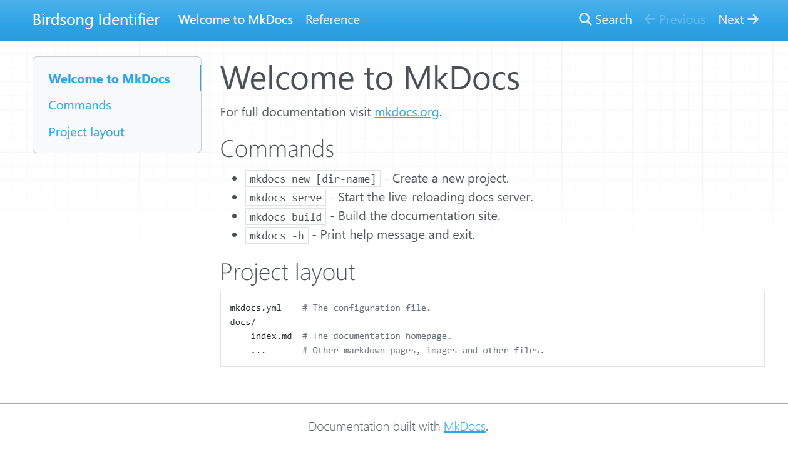
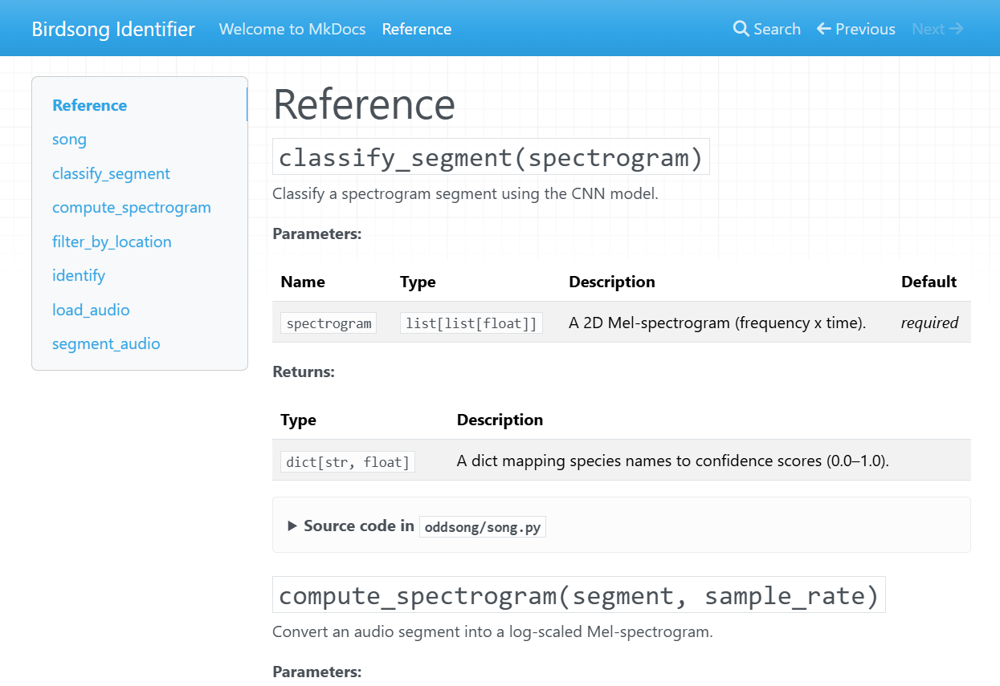

Documentation sites
Last updated on 2026-04-24 | Edit this page
Estimated time: 12 minutes
Overview
Questions
- How do I present comprehensive information to users of my research software?
- How do I generate a website containing a user guide to my code?
- What should a good documentation website contain?
- How do I publish my software documentation on the internet?
Objectives
- Learn about documentation websites for software packages.
- Gain basic familiarity with some common website generation tools.
- Understand the basics of structuring a documentation website.
- Be able to set up a static site deployment workflow.
Documentation websites
A documentation website is a user guide and reference manual for a library of research code. Up to now, we’ve looked at ways to put helpful notes in our code, but now we’ll learn how to write a longer, more complete guide to the research tools you create.
A documentation site brings all your user guidance into one place. This kind of resource may be prepared for research software and will usually contain an introduction, installation instructions, a user guide, troubleshooting tips, and an in-depth reference section.
To get an idea of this, here are some links documentation websites for widely-used data analysis and research software packages:
- pandas is a data processing library for the Python programming language.
- ggplot2 is a plotting package for the R statistical language.
- scikit-learn is a machine learning library for the Python programming language.
Evaluate these documentation sites.
- What do you like about them?
- How approachable are they as a new user?
- What do you find difficult to understand in this material?
Keep these impressions in mind as we explore what makes a good documentation site and how to build one.
Why create a website?
There are many advantages to building a documentation site to provide a information-rich resource for researchers who use your code at institutions all around the world.
Advantages
These sites can work as hubs for collaboration, sharing the latest updates, and encouraging people to take up your system and get involved in improving it. The effort of setting one up will be rewarded in the long run because you will have created a valuable asset that will foster collaboration and knowledge sharing in your research community.
A key foundation stone of modern digital research practices is the ability to replicate results by reproducing analytic workflows. Clear, thorough documentation of the research code ensures that researchers can repeat processes and verify results and other people’s outputs.
Documentation sites are really useful for introducing new users to your software. It makes it much easier and faster for new users to get started using your software to boost their research. It’s one of the most effective ways to create a user base that has a sophisticated understanding of the research code, which is essential for them to adapt it to the complex problems that often arise in research contexts.
They’re also a valuable resource for your existing user base, enabling them to look up reference material or search the manual to find new capabilities they weren’t aware of before. This will increase the potential for your software to increase the productivity of other research teams.
When to use one
Although the advantages are numerous, not all software packages require a comprehensive documentation website. However, for any code project that is growing in the number of collaborators, users, and technical complexity, consider coordinating the team to write one as soon as possible to help the project continue its healthy growth.
When is it appropriate to establish a documentation website? Consider the following factors:
- How many resources will it take to write and maintain?
- How many end-users need the information?
- Is there a simpler format that can convey the same information?
Once you’ve decided to create a documentation site, the next step is to decide what to put in it and how to write it.
Writing style
As we discussed in the episode on READMEs, it’s important to strive to use everyday, jargon-free language. It helps to set an approachable tone that encourages others to use the software and get involved with the project. This will ensure that the code is accessible to the widest possible layers of the research community and foster collaboration.
Always consider the target audience of your documentation, because your user base may be unaware of some of the unstated assumptions and technical background knowledge that you take for granted.
Contents
Documentation pages contain comprehensive information about a particular piece of research software. Think of it like a user manual for your car or an instruction guide for building a piece of furniture.
Research context
For research software, it may be important to explain the theoretical background or statistical methods that are used and explain the domain-specific assumptions that were made when the code was designed and written. It’s good practice to provide a concise summary of the relevant concepts and link to external sources such as papers, books, and other websites for users to take a deeper dive into the principles and algorithms used.
Installation instructions
This section provides a detailed walkthrough of the steps required to install the package onto their computer, with details that are specific to their operating system.
Tutorials
It can be very useful to include an in-depth “Getting Started” guide that provides step-by-step instructions to introduce a new user to your software package. It might guide the user through each aspect of the tool’s functionality and features so they’re able to become familiar with it in a more approachable way.
A series of code examples to demonstrate how to use the software in different contexts can be very useful for users to get off the ground in implementing common research workflows to achieve their specific goals.
User reference
If you have written functions that are intended to be used in other researchers’ code, then an in-depth explanation of these procedures is essential reference material. In the world of software engineering, these detailed appendices are called API references, which list each function and describe how the arguments may be used to control how the code works. This content may be automatically generated from the documentation strings.
Troubleshooting
As issues come up with your research code, and are eventually resolved and clarified, make a note of the causes of these troubles and make them available to the entire user base in your documentation site. This will help users to identify and fix common misunderstandings and technical problems they may run into when utilising your code.
This prevents a situation where potential solutions to common issues do exist, but are scattered around the internet and are the exclusive knowledge of a few individuals and are hard to find.
Tools
There are various tools available to build documentation sites for your research software. The right choice depends on your programming language, the complexity of your project, and how much control you need over the site’s appearance.
GitHub Wiki
If you are publishing your code on GitHub, which is a web service that hosts code repositories, then one of the easiest ways to create a documentation site is to use the wiki feature on that platform. This is a great way to write detailed, structured documents containing long-form content that describes aspects of your software. What’s more, it’s available alongside your code so your documentation and software are located in one place.
As with readme files, the text that appears on GitHub is formatted using Markdown syntax.
Getting started
To create a wiki, which is a simple, easy-to-edit web site, go to the main page of your code repository on GitHub and click on the Wiki button on the top menu. For a detailed walkthrough of this process, please read adding or editing wiki pages on the GitHub documentation.
GitHub Wikis
For more information about the wiki feature on GitHub, see Documenting your project with wikis on the GitHub documentation.
Create a wiki page
Navigate to your code repository on GitHub and create a wiki. Add a page that describes how to install your software.
Consider what information a new user would need to get started. How does it feel to write for that audience?
Standalone site generators
For projects that need more structure, customisation, or automatic generation of content from code, standalone site generator tools are a good choice.
MkDocs
MkDocs is a tool for building documentation websites that is popular amongst developers of Python packages, although it can be used to document code written in any programming language. It takes a collection of Markdown files and turns them into a polished static website ready to publish on the internet.
MkDocs is designed to be simple to set up: a single configuration
file (mkdocs.yml) controls the site, and all of your
content is written in plain Markdown — the same syntax you used for your
readme files. The mkdocstrings plugin can
automatically generate reference pages from your code’s documentation
strings.
MkDocs itself is language-agnostic — it simply converts Markdown into
a website, so you can use it to write prose documentation for code in
any language, including R. However, the mkdocstrings plugin
used below to auto-generate reference material only understands
Python.
If you are documenting an R package, the standard tool is pkgdown, which generates
a documentation site directly from your package’s
DESCRIPTION file, vignettes, and function documentation.
For a full walkthrough, see the Website chapter of R
Packages by Hadley Wickham and Jennifer Bryan.
Getting started
Let’s use MkDocs to create a documentation site for our Python code.
Installing MkDocs
Navigate to the root folder of your code project. Create a virtual
environment using venv which is a
separate area in which to install the MkDocs package. This command will
create a virtual environment in a directory called
.venv/
This will create a subdirectory that contains the packages we’ll need to complete the exercises in this section.
Run the activation script to enable the virtual environment. The specific command needed to activate the virtual environment depends on the operating system you are using.
Use the Python package manager pip to install
MkDocs, along with the mkdocstrings plugin for
generating reference material from Python code.
MkDocs 2.0 is on the horizon (see the MkDocs
2.0 announcement) and introduces changes that may break the
configuration used in this episode. Pinning the installation to the
1.x series ("mkdocs==1.*") ensures that the
commands and mkdocs.yml shown here continue to work as
written.
When you run mkdocs with a 1.x release, you may see a
warning about the upcoming 2.0 release. To silence it, set the following
environment variable before running MkDocs:
Once you’re comfortable with MkDocs and ready to upgrade, drop the version pin and follow the official migration guide.
Start a new MkDocs project
MkDocs includes a command to scaffold a new project. Navigate to your project’s root folder and run the following command.
This creates two things:
-
mkdocs.yml— the configuration file for your site. -
docs/index.md— a starting page containing placeholder content, written in Markdown.
Your documentation content lives inside the docs/
folder. You can add as many Markdown files as you like, and they will
become pages of your site.
Configure the site and plugins
Open mkdocs.yml and replace its contents with the
following:
-
site_namesets the title that appears in the site’s header and browser tab. -
pluginsis a list of extensions that add features.searchenables a full-text search index, andmkdocstringslets you pull documentation directly from your Python source code.
MkDocs options
To find out more about the MkDocs configuration file, please read the Configuration documentation.
Previewing the site locally
MkDocs includes a built-in development server that rebuilds and refreshes the site automatically as you edit files. This makes it very fast to see the effect of your writing.
Open your web browser to http://127.0.0.1:8000 to view
your documentation site. Leave this command running while you work — any
time you save a Markdown file, the browser will reload with your
changes. Press Ctrl+C to stop the server.
Building the site
In this context, building means taking our collection of Markdown files and converting them into the source code files that define a website. MkDocs will create HyperText Markup Language (HTML) files, which is the markup language for pages that display in a web browser commonly used on the internet.
To build our site, we run the following command.
MkDocs will load our files from the docs/ directory and
output the built HTML files into a directory called
site/.
The file site/index.html contains the home page of your
new documentation site! Open that file to view your handiwork.

Automatic reference generation
It can be useful to automatically populate our documentation sites by
converting our documentation strings into
formatted text. We can achieve this using the mkdocstrings plugin, which we
already installed and enabled in mkdocs.yml.
Adding a reference page
Create a new file docs/reference.md with the following
contents.
The mkdocstrings plugin uses a special Markdown syntax
to inject generated documentation into a page:
-
:::is the directive that tellsmkdocstringsto pull in documentation. -
oddsong.songis the dotted path to the Python module we want to document.
By default, mkdocstrings includes all public functions,
classes, and variables in the module, rendered from their documentation
strings. For more options (such as filtering members or customising the
layout), see the mkdocstrings Python
handler documentation.
Now, when we build our site, MkDocs will scan the contents of the
oddsong Python module and automatically generate a useful
reference guide to our functions.

Automatically generate content
Try using mkdocstrings to analyse your own code and
build a documentation site by following the steps above.
After the mkdocs build command has completed
successfully, browse the contents of the site/ folder and
discuss what you find.
Publishing
Now that you’ve started writing your documentation website, there are various ways to upload it to the internet so that others can read it.
In this episode, we’ll focus on GitHub Pages, a free hosting service built into GitHub. It can automatically build and publish your site whenever you push changes to your repository, making it a convenient choice if your code is already hosted on GitHub.
GitHub Pages is not the only option. Other hosting services popular with researchers include:
- Read the Docs is a dedicated documentation hosting platform that supports MkDocs and other popular generators. It automatically rebuilds your documentation when you push new commits and provides versioned documentation so users can browse the docs for older releases of your software.
- GitLab Pages is the equivalent of GitHub Pages for projects hosted on GitLab, including self-hosted GitLab instances that some universities run for their researchers.
- Netlify and Cloudflare Pages are general static-site hosts with free tiers that work well for documentation built with MkDocs or similar tools.
All of these platforms offer free tiers for open-source projects. GitHub Pages is the simplest to set up when your code already lives on GitHub, while Read the Docs provides more documentation-specific features such as version switching and a documentation-focused search.
GitHub Pages
Before you start
Your repository must be public (or you must have a GitHub Pro account) and already pushed to GitHub.
MkDocs provides a built-in command to publish your site to GitHub Pages. From your project’s root folder, run:
This builds your site and pushes the output to a branch called
gh-pages on your GitHub repository. GitHub Pages will then
serve the site from that branch.
Once the command completes, the published URL is shown in the terminal output. You can also find it under Settings → Pages in your repository.
Automating deployment
Running mkdocs gh-deploy manually works well for small
projects, but for collaborative repositories it’s common to automate
this with a GitHub Actions workflow that rebuilds and redeploys the site
on every push to main. Configuring Actions is beyond the
scope of this episode — see Deploying
your docs in the MkDocs documentation for an example workflow.
Check your Pages settings
The mkdocs gh-deploy command pushes your built site to a
branch called gh-pages, but it does not configure the
GitHub Pages settings for you. For a brand-new repository, GitHub will
usually enable Pages automatically the first time this branch is pushed,
and your site will appear within a minute or two.
If your site does not appear, go to Settings → Pages
on your repository and check that the source is set to Deploy from a
branch, with the branch set to gh-pages and the folder
set to / (root). For more details, see Configuring
a publishing source for your GitHub Pages site in the GitHub
documentation.
Update .gitignore
Add site/ to your .gitignore file so the
local build output is not committed to the repository.
Publish your MkDocs site
Follow the steps above to publish the MkDocs documentation site you built earlier to GitHub Pages.
Once the workflow has run successfully, share the URL with a neighbour and check that each other’s sites are accessible.
- Structured documentation websites are very useful for users to learn to use all kinds of digital systems, ensuring its successful adoption by the wider research community.
- Documentation sites contain comprehensive installation instructions, user guides, and troubleshooting tips.
- There are several libraries that may be used to generate documentation sites.
- Documentation websites can be published to GitHub Pages using the
mkdocs gh-deploycommand.
Further resources
Please review the following material which provides more information about some of the topics covered in this episode.
- MkDocs Getting Started
- mkdocstrings
- GitHub documentation About wikis
- Write the Docs Tools for documentation writing